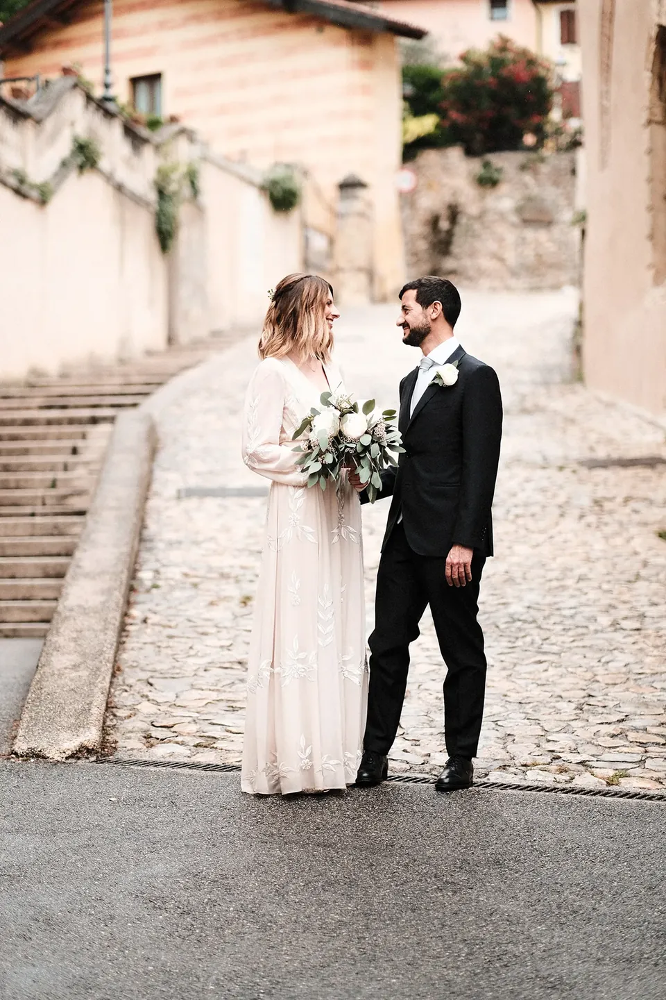
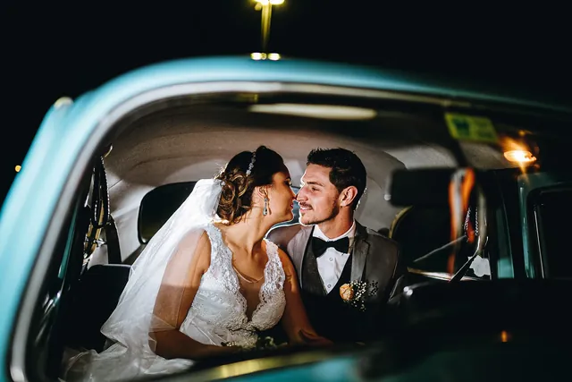
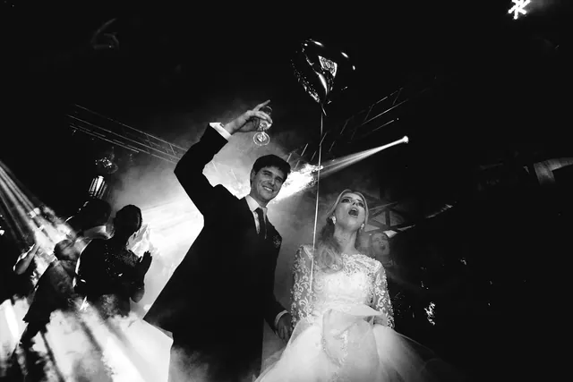
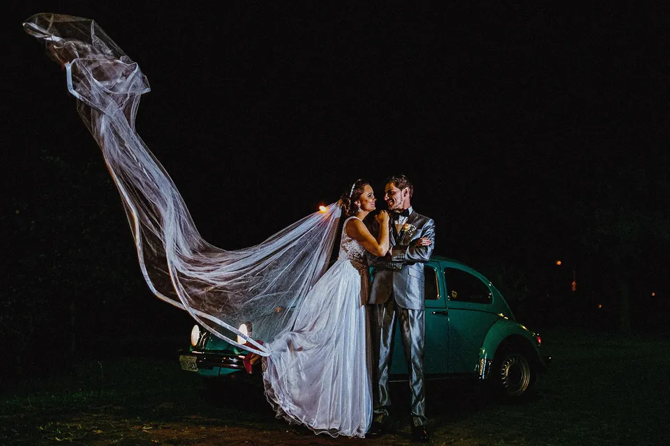
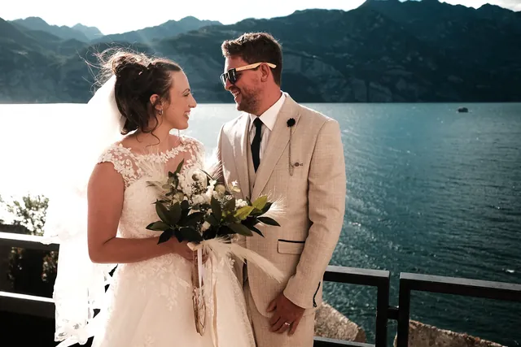
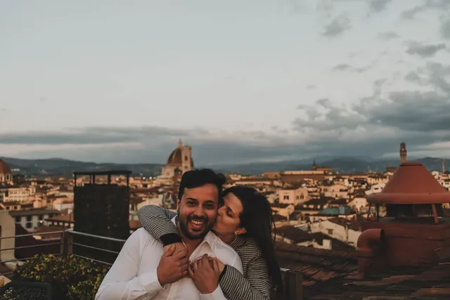
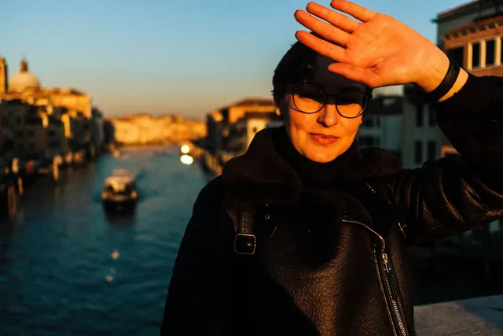

01
Entre ruas
- Local
- Itália
- Tipo
- Wedding
Arquitetura, movimento e dois corpos ocupando a cidade sem pedir licença.

Agudo — RS / available elsewhere
ScrollLADOb. / Manifesto / 001
Do outro lado do óbvio
LADOb. nasceu para quem vê casamento, gente, música, cinema e fotografia como parte da mesma história.
Featured stories / 001—003
Arquitetura, movimento e dois corpos ocupando a cidade sem pedir licença.

Quando a luz diminui, o gesto fica mais alto. A fotografia acompanha sem interromper.

A música muda tudo: o enquadramento, a respiração e a distância entre as pessoas.
Contact / 35mm + digital
Toque em um frame para ampliar.
FRAME_047
35MM / DIGITAL
ARCHIVE_2026
RGB / 16BIT

Archive / Selected frames



PEOPLE / LUOGHI
CF / LB — 001—025
LADOb. / About / 004
Uma frente autoral Centrofotos
Fotografamos o que existe entre o roteiro e o acaso: o gesto fora de hora, a luz imperfeita, a pista cheia, o silêncio antes de entrar.
Com atenção documental e direção quando ela realmente importa, construímos uma narrativa que pertence a vocês — e continua viva depois do dia.
Experience / 001—003
Entendemos o ritmo, as pessoas e o que faz esta história ser só de vocês.
Observamos com discrição e dirigimos com precisão apenas quando é necessário.
Construímos uma sequência com atmosfera, contraste e memória — não apenas uma coleção de imagens.
LADOb. / Commission / Open dates
Vamos conversar.
Conversar pelo WhatsAppCasamentos / Ensaios / Destination